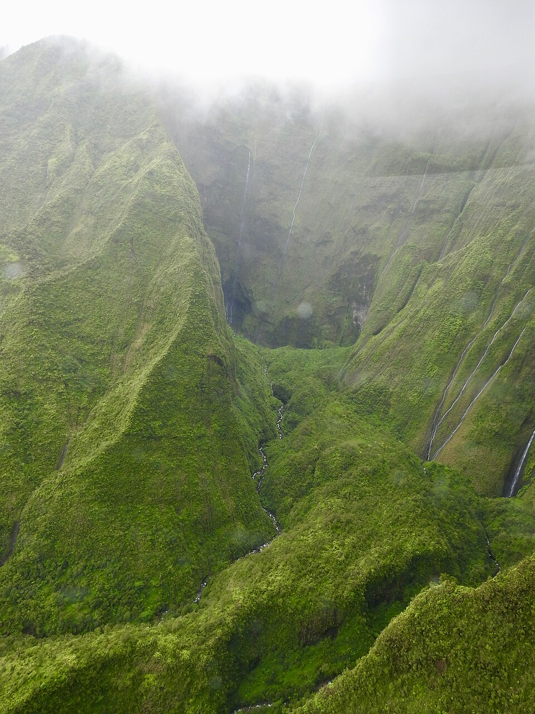

Mount Waiʻaleʻale
Place: Mount Waiʻaleʻale, Kauaʻi
Type: Ancient volcanic summit / watershed / sacred landscape
Story it tells: A rain-soaked summit at the center of Kauaʻi whose name, sacred traditions, and overflowing waters connect the island's mountains to rivers, forests, farms, and communities below.

Mount Waiʻaleʻale rises 5,148 feet near the geographic center of Kauaʻi. The ancient volcanic summit is famous as one of the wettest places on Earth, receiving hundreds of inches of rain every year. Clouds frequently bury its upper slopes, while countless streams and waterfalls descend from its deeply eroded walls. Waiʻaleʻale functions as the watery center of the island, feeding rivers and watersheds that flow toward nearly every coast, the true lifesource of Kauaʻi.
The name Waiʻaleʻale is commonly translated as "rippling water" or "overflowing waters." It refers to a small lake or pond on the saturated summit plateau, where frequent rain and ground saturation keeps the water continually full. The name captures both the appearance of that wind-rippled surface and the mountain's larger character as a place where water gathers, spills outward, and begins its journey toward the lowlands and ocean.
Waiʻaleʻale receives so much rain because moisture-laden trade winds strike the mountain's steep eastern face and are forced rapidly upward. As the air rises and cools, its moisture condenses into clouds and rain. Over millions of years, this relentless weather has carved immense amphitheaters and narrow valleys into what remains of Kauaʻi's ancient shield volcano. Along the eastern wall, thin waterfalls descend through the mist into a basin commonly called the Blue Hole or Weeping Wall, forming part of the headwaters of the Wailua River.
The mountain's runoff reaches far beyond Wailua. Water draining from the Waiʻaleʻale and Alakaʻi plateau feeds river systems flowing toward Waimea, Wainiha, Hanalei, and other regions of Kauaʻi. The same rainfall that cuts through Waimea Canyon also replenishes streams, aquifers, forests, and agricultural lands throughout the island. In this sense, Waiʻaleʻale is one of the primary systems through which Kauaʻi remains alive and earns its moniker as The Garden Isle.
In Hawaiian tradition, the summit belonged to the Wao Akua, the "realm of the gods." Aliʻi and kāhuna made difficult journeys into the cloud-covered uplands to honor Kāne, associated with life and freshwater. Near the summit lake stood Kaʻawako, a small stone heiau or altar where offerings were made. Traditions also describe a hand-dug channel at the summit that directed overflowing water toward the eastern cliffs, linking the sacred source above with Wailua, one of Kauaʻi's most important chiefly and religious centers below.
Reaching the summit required extraordinary endurance. Travelers began along the Wailua River before continuing into the mountains on foot, crossing steep ridges, heavy forest, deep mud, and near-constant rain. The old eastern route eventually disappeared beneath landslides and dense vegetation. Even today, the summit remains remote, environmentally sensitive, and largely inaccessible except to permitted researchers, conservation workers, and cultural practitioners.
The extreme environment has also produced an unusual summit ecosystem. Constant rain, acidic bog water, strong winds, and nutrient-poor ground keep many plants remarkably small. ʻŌhiʻa lehua that grow into tall forest trees elsewhere survive near the summit as low, twisted shrubs surrounded by mosses, ferns, sedges, and other plants adapted to the saturated landscape. These high forests also provide critical habitat for native birds pushed into the mountains by habitat loss, invasive predators, and mosquito-borne avian disease.
Western scientists began installing rain gauges near the summit during the early twentieth century, turning Waiʻaleʻale's extraordinary rainfall into an internationally recognized measurement. Yet its deeper significance long predates those records. The mountain's Hawaiian name already described the essential truth of the landscape: water gathers here, ripples across the summit, and overflows toward the island below.
Today, Mount Waiʻaleʻale remains one of Kauaʻi's most powerful natural and cultural landmarks. It is an ancient volcanic summit being slowly reshaped by the very rain it captures, a refuge for rare native life, and a sacred source whose waters connect the high realm of the clouds and gods to communities across the island.